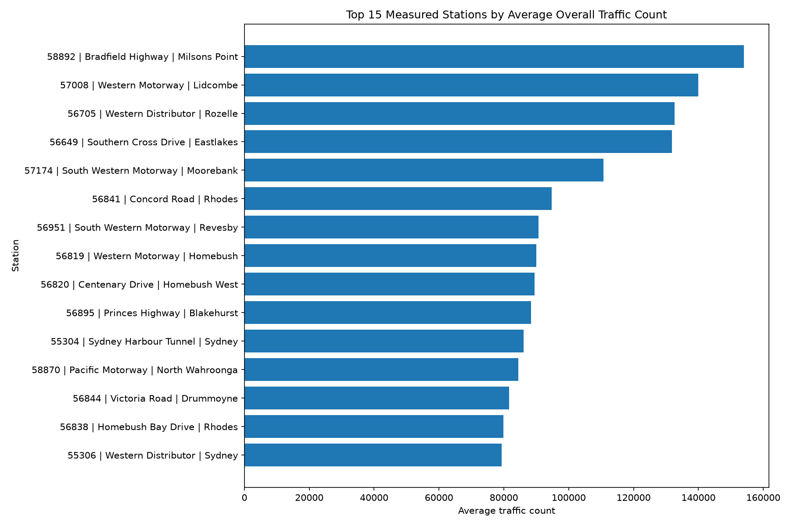
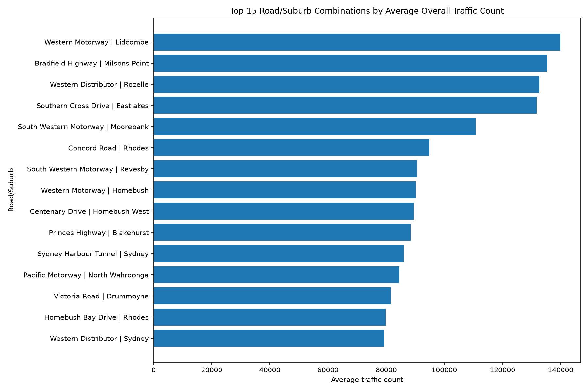
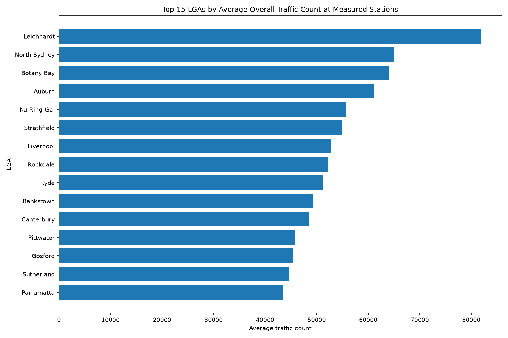
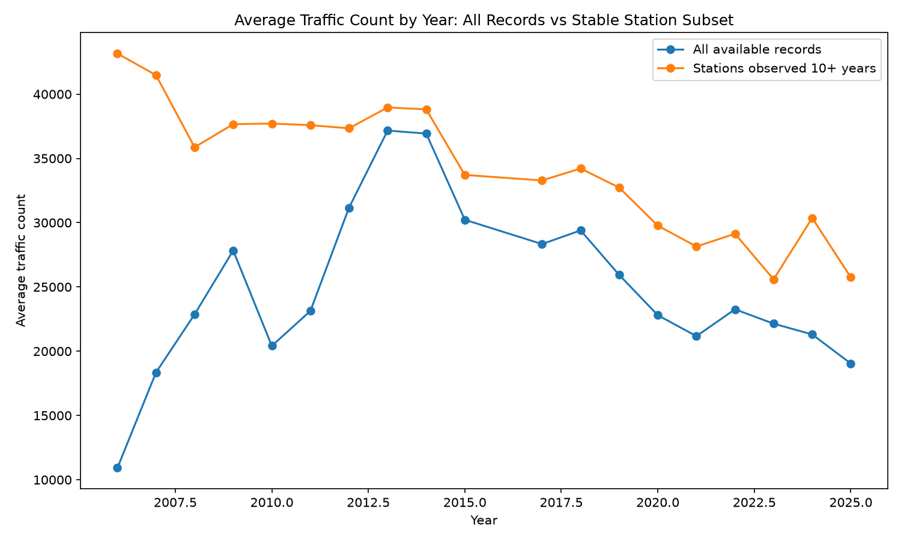
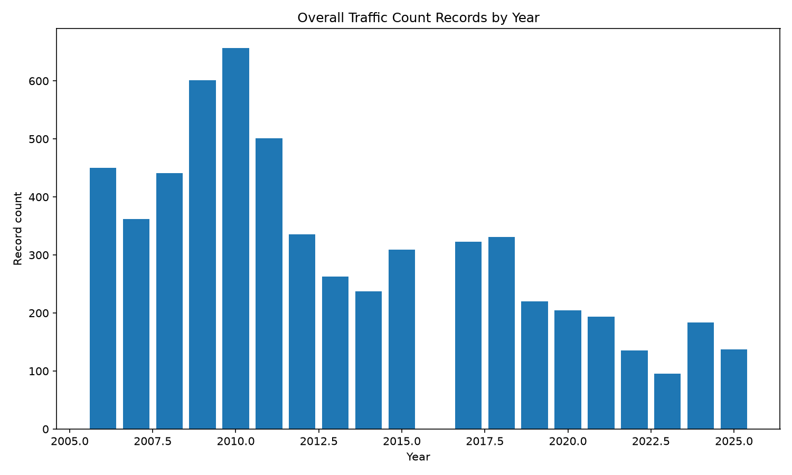

Project Overview
This project analyses publicly available NSW road traffic count data from Transport for NSW to explore how measured traffic volumes vary by traffic count station, road corridor, suburb, local government area and year.
The project follows an end-to-end data workflow, including data download, profiling, cleaning, preparation, analysis and visualisation. The final analysis focuses on a cleaned overall traffic dataset to avoid misleading comparisons across different reporting periods, vehicle classes and directional records.
Data Source
This project uses publicly available traffic count data from Transport for NSW, accessed through the Data.NSW open data portal.
Original dataset: NSW Roads Traffic Volume Counts API
Objective
The main question explored in this project was:
How do recorded traffic volumes vary across NSW traffic count stations, road corridors, LGAs and years?
Supporting questions included:
- Which measured traffic count stations have the highest average overall traffic counts?
- Which road and suburb combinations show the highest measured traffic counts?
- Which LGAs have higher average measured traffic counts at available stations?
- How have average recorded traffic counts changed over time?
- How does changing station coverage affect interpretation of yearly trends?
Tools Used
Project Workflow
The project was structured as a reproducible analysis workflow, moving from raw public data through to cleaned outputs, summary tables and visual charts.
- Downloaded public traffic count data from the NSW open data API.
- Profiled the raw station reference and yearly summary datasets.
- Cleaned and merged station metadata with yearly traffic records.
- Inspected reporting fields to identify comparable analysis records.
- Created a focused overall traffic dataset for consistent comparison.
- Analysed traffic counts by station, road/suburb, LGA and year.
- Compared yearly trends against station coverage to avoid over-interpreting changes.
- Exported summary tables and charts for portfolio presentation.
Analysis Dataset
The analysis uses a focused overall traffic dataset. Records were filtered to focus on full-year, all-days, combined-direction and total vehicle-style records where possible.
This reduced the risk of comparing inconsistent record types, such as weekday-only counts, directional counts or specific vehicle-class counts.
The final focused dataset contains:
- 5,981 records
- 1,727 unique traffic count stations
- 151 LGAs
- 898 suburbs
- Data from 2006 to 2025
- 24,552.64 average traffic count
- 16,685 median traffic count
- 175,816 maximum traffic count
Key Findings
1. High measured traffic counts are concentrated around major road corridors
The highest average measured traffic counts appeared around major routes such as Bradfield Highway, Western Motorway, Western Distributor, Southern Cross Drive and South Western Motorway.
2. Station-level analysis is more reliable than broad suburb or LGA claims
The dataset is based on traffic count stations, so the results are best interpreted as measured traffic at available station locations rather than total traffic across an entire suburb or LGA.
3. Yearly trends are affected by changing station coverage
Average recorded traffic counts generally declined after the 2013-2014 period. However, the number of available records also changes substantially by year, so yearly movement should be interpreted alongside station coverage.
4. Stable-station comparisons provide better trend context
Comparing all available records against stations observed for at least 10 years helps separate possible traffic movement from changes in which stations are included in each year of the dataset.
5. Data quality should be considered before drawing conclusions
The dataset includes quality rating fields and some missing quality values. The analysis includes data quality checks to support more careful interpretation of the results.
Visualisations
The charts below summarise the main analysis outputs, including high-volume measured stations, road/suburb combinations, LGA-level comparisons and yearly trend patterns.

Top measured traffic stations
This chart ranks measured traffic count stations by average overall traffic count, using a more reliable ranking that excludes unknown locations and requires at least five observed records.

Top road/suburb combinations
This view highlights road and suburb combinations with the highest average measured traffic counts.

Top LGAs by measured traffic counts
This chart compares LGAs based on average traffic counts at available measured stations. It should not be interpreted as total traffic across each LGA.

Yearly trend and station coverage
This chart compares all available overall records against a more stable subset of stations observed for at least 10 years, showing why coverage needs to be considered when interpreting trends.

Record coverage by year
This chart shows how the number of available records changes by year, which helps explain why yearly traffic trends should be interpreted with care.
Project Outputs
The project produced cleaned analysis datasets, summary tables and charts covering top measured stations, road/suburb combinations, LGA-level summaries, yearly traffic trends and station coverage comparisons.
For the full technical workflow, source code, methodology and output files, view the GitHub repository below.
View GitHub RepositoryLimitations
This analysis should be interpreted as an exploratory review of available traffic count records, not a complete measure of all road traffic across NSW.
- The data is collected at traffic count station locations only.
- Station coverage varies by year.
- Some roads, suburbs and LGAs have more monitoring coverage than others.
- Some records have missing location or quality information.
- Average traffic counts can be affected by changes in which stations are available each year.
- Results should not be interpreted as total traffic by suburb or LGA.
- The analysis does not model population growth, road network changes or external events.